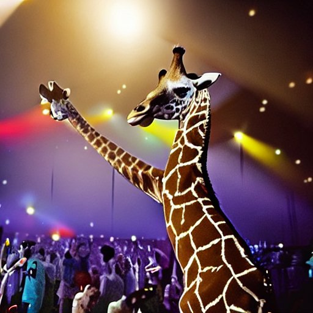
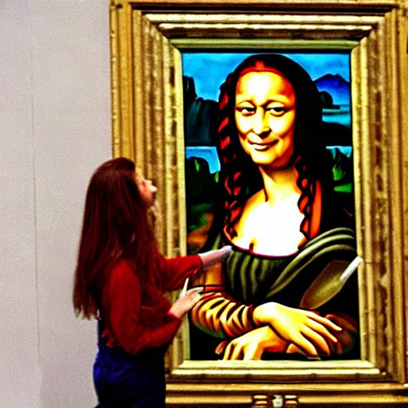

Aunque tenga pinta de cacahuete sueco, tiene una ascendencia propia de un paquete de AliBaba, pocos continentes se resisten a los encantos de los Rivas-Micoud Tanabe
Your father is your brother
Your sister is your mother
You all fuck one each other
The rivas family
Ya lo habrás adivinado, pero siendo una puta girafa con piernas de T-rex, mal se tenía que dar para que no se le diese bien el deporte ese. Se pasa de septiembre a marzo viajando pero se aguanta fácil.
Sofía y tú jugando al voley:

Si no tenía suficiente con ser medio japonesa, busca una excusa para sonreír fuerte y cerrar los ojos cada vez que tiene oportunidad, si esto no lo has entendido, Sofía no es pa ti, prueba con mi amigo Adrián, él es más pijo
Sofía en Stardust:
Segúramente, a lo largo de la cita, habrás notado que Sofía te ha mirado con cara de capitana de las animadoras viendo al quarterback ligar con la fea, pero no te preocupes, es gilipollas, es su cara de pensar, probablemente esté pensando en qué momento decirte que si no le comes el c...
Sofía pensando en comer(te):

No hace falta que te lo diga porque ya te habrá dicho que habla italiano y se habrá puesto a hablar con el primer panini que se haya encontrado en la calle
A parte, habla japonés de estar por casa e inglés despectivo, que es mucho más interesante y abre más puertas, pero no... Italiano. Tenía que ser italiano lo que le gustase a la niña
Sofía mangia una pizza:

Sí, no te lo quería decir pero si has llegado hasta aquí mereces saberlo, tienes sentada en frente a la hija perdida de la rubia de scooby doo y agata ruiz de la prada, que cogieron el vientre de alquiler de un flamenco sobrino de un perezoso.
Hace camisetas, cascos, pinta, colorea. Vamos, el paint del windows con antebrazos. Tan pronto te hace un pendiente como un número de contorsionismo leonardal.
Sofía pintando el cuadro que tenía Da vinci en su letrina y que sirvió de inspiración para el ecce homo
Te cansaras de Sofía, pero alli estaremos nosotros para reírnos de ella creyendo que estamos hablando de x y z que se habían liado con a e i o u. Un beso.
Les susodiches:

El de abajo no es egipcio, es que se pintó la raya donde no tocaba
Si después de esto no estás pagando un hotel en barajas para llevartela esta noche, eres tonto.
Ubicación difícil de encontrar porque no se orienta ni pa atrás, pero buen servicio y muy atenta. Se ve que la tía para seducir emplea un movimiento rotatorio de hoola hoop invisible para demostrar sus destrezas pélvicas a la presa en cuestión. Experiencia recomendable y muy familiar because her father is her brother, her sister is your mother, they all fuck one each other, The rivas family.
Nadya de la Hoz4/5 stars
Extremadamente bien de cintura para arriba, olor a surströmming de cintura para abajo que tira para atrás. Solo disfrutas el 50% de la experiencia. Encima si no bajas se queja y se va. Bien para 4 besos en la discoteca, poquito más. Personalmente no repetiría
Adrián P.G2/5 stars
Si buscas huir del silencio y el aburrimiento del teletrabajo, aquí encontrarás un sitio perfecto. Repleto de bullicio y conversación siiiiin pausas. De turras a turras 100% recomendable.
Patricia González4/5 stars
Me invitó a una isla en japón porque se ha comprado una isla en Okinawa, y está en medio del mar. Así que no me extraña que le traigan las facturas en piragua, la luz y lo demás. Ahora quiero irme a vivir a una isla de Japón, me entraron ganas de tatuarme en el pecho la cabeza de un dragón. Había un temporal, y no se estaba mal. Vimos pelis de karate y me quedé a cenar. Y aun sabiendo que no estaba entre agua salada aun pude ir como persona invitada. Aunque no tenga terraza ni vasos ni tazas vive más tranquila en Okinawa
Fresquito y Mango5/5 stars
Muy buena compañera de tecno, huele mal y hace hueco en la multitud pa poder menear el esqueleto que no veas. A veces lleva gafas de sol chulas.
Luis BQ4/5 stars
De mis hijas es la segunda favorita.
Julia Tanabe4/5 stars
De mis hermanas es la segunda favorita.
Leonardo Rivas-Micoud Tanabe3/5 stars
De las que conozco por mi colega Leo es la segunda favorita.
Jose Ramón Corrales3/5 stars
¿Cuál de ellas era Sofía?
Luis Ruano1/5 stars
Estuvimos juntos un invierno entero, fue una ida y venida, todo el rato girando sobre el mismo eje.
Mike a.k.a El Tontito2/5 stars
La única persona que he conocido capaz de esquiar con el peroné roto.
Vicente C.N.4/5 stars
Es más guapa en persona que en fotos
Reyes P. N.3/5 stars
Creado y editado por Luis BQsito asno de shrek
Diseñado por Patricia Escaladez Turranda